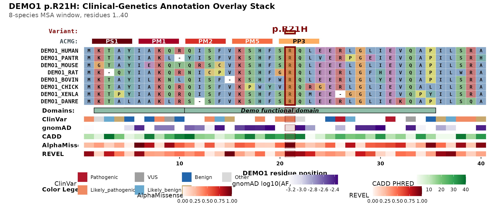

What this package does
msaVariant overlays clinical-genetics evidence onto a
multiple sequence alignment (MSA) in a single figure. Each layer paints
a different kind of evidence:
- the variant — the patient’s substitution, highlighted through every panel
- protein domains — InterPro/Pfam regions
- gnomAD — population allele frequencies
- ClinVar — clinical pathogenicity calls
- AlphaMissense / REVEL / CADD — in-silico pathogenicity scores
- an automatic ACMG evidence-code strip (PS1, PM1, PM2, PM5, PP3)
-
geom_track()— a generic per-residue track (bring your own data)
A runnable example
Everything below uses the synthetic
DEMO1 bundle that ships with the package —
fabricated data, no network, no real predictions — so it runs out of the
box. We point the cache at a temporary directory so the example never
touches your real cache.
library(msaVariant)
Sys.setenv(MSAVARIANT_CACHE = tempfile("msaVariant_cache_"))
import_local_bundle(
system.file("extdata", "DEMO1.rds", package = "msaVariant"),
gene = "DEMO1"
)
plot_variant_overlay(
gene = "DEMO1",
aligned_fasta = system.file("extdata", "demo_aligned.fasta",
package = "msaVariant"),
variant_pos = 21,
variant_label = "p.R21H"
)
The five “Learn more” guides build on this:
vignette("acmg-evidence-codes"),
vignette("annotation-tracks"),
vignette("colour-schemes"),
vignette("toggling-layers"), and
vignette("bring-your-own-data").
How the data layer works for real genes
For a real gene you do not ship the data yourself. The annotation
tables (gnomAD, ClinVar,
AlphaMissense, REVEL, CADD,
domains) are fetched from a Zenodo deposit the first time you use a
gene, then cached locally. The package code itself ships with no
clinical-genetics data — only the visualisation machinery and the
synthetic DEMO1 example.
This means:
- The package install is small and fast.
- You always get the data version pinned to the package release, so the figure is reproducible.
- Updating the data (when gnomAD releases a new version, say) is a matter of re-running the build scripts and re-uploading to Zenodo.
The chunk below shows the real-gene workflow with ggmsa.
It is not run here because it needs the (Suggested) ggmsa
package and network access to the deposit; see
vignette("tutorial_full_workflow") for the end-to-end
version.
library(ggmsa)
library(msaVariant)
# Your alignment: PATL1 orthologs around residue 518
fa <- system.file("extdata", "patl1_orthologs.fasta",
package = "msaVariant")
# The patient's variant
patient <- data.frame(
pos = 29, # K518 in the demo stretch
pos_end = 61, # frameshift through end of window
label = "K518fs",
consequence = factor("frameshift",
levels = c("frameshift","missense","nonsense"))
)
ggmsa(fa, char_width = 0.6, seq_name = TRUE) +
geom_variant(patient, msa = fa) +
geom_domain(gene = "PATL1", msa = fa) +
geom_clinvar(gene = "PATL1", msa = fa) +
geom_alphamissense(gene = "PATL1", msa = fa) +
geom_gnomad(gene = "PATL1", msa = fa)Bringing your own data
If you already have a custom annotation (a lab-internal database, a
paper’s supplementary table, etc.), pass it via
geom_track() instead of a gene symbol. This chunk also
needs ggmsa, so it is shown but not run; see
vignette("bring-your-own-data") for a runnable version.
my_annotations <- read.csv("my_annotations.csv") # cols: pos, score
ggmsa::ggmsa(fa) +
geom_track(my_annotations, msa = fa,
value = "score", name = "My score")Cache management
cache_location() # where the cache lives
cache_summary() # what is currently cached
clear_cache() # remove everything
clear_cache("gnomad") # remove only one sliceCitation
If you use msaVariant in published work, please cite
both the package and the underlying data sources (see the Zenodo deposit
README for the full citation list).
Session info
sessionInfo()
#> R version 4.6.1 (2026-06-24)
#> Platform: x86_64-pc-linux-gnu
#> Running under: Ubuntu 24.04.4 LTS
#>
#> Matrix products: default
#> BLAS: /usr/lib/x86_64-linux-gnu/openblas-pthread/libblas.so.3
#> LAPACK: /usr/lib/x86_64-linux-gnu/openblas-pthread/libopenblasp-r0.3.26.so; LAPACK version 3.12.0
#>
#> locale:
#> [1] LC_CTYPE=C.UTF-8 LC_NUMERIC=C LC_TIME=C.UTF-8
#> [4] LC_COLLATE=C.UTF-8 LC_MONETARY=C.UTF-8 LC_MESSAGES=C.UTF-8
#> [7] LC_PAPER=C.UTF-8 LC_NAME=C LC_ADDRESS=C
#> [10] LC_TELEPHONE=C LC_MEASUREMENT=C.UTF-8 LC_IDENTIFICATION=C
#>
#> time zone: UTC
#> tzcode source: system (glibc)
#>
#> attached base packages:
#> [1] stats graphics grDevices utils datasets methods base
#>
#> other attached packages:
#> [1] msaVariant_0.2.0
#>
#> loaded via a namespace (and not attached):
#> [1] gtable_0.3.6 jsonlite_2.0.0 dplyr_1.2.1
#> [4] compiler_4.6.1 crayon_1.5.3 tidyselect_1.2.1
#> [7] Biostrings_2.80.1 jquerylib_0.1.4 systemfonts_1.3.2
#> [10] IRanges_2.46.0 Seqinfo_1.2.0 scales_1.4.0
#> [13] textshaping_1.0.5 yaml_2.3.12 fastmap_1.2.0
#> [16] ggplot2_4.0.3 R6_2.6.1 XVector_0.52.0
#> [19] patchwork_1.3.2 labeling_0.4.3 generics_0.1.4
#> [22] knitr_1.51 BiocGenerics_0.58.1 htmlwidgets_1.6.4
#> [25] tibble_3.3.1 desc_1.4.3 pillar_1.11.1
#> [28] bslib_0.11.0 RColorBrewer_1.1-3 rlang_1.3.0
#> [31] cachem_1.1.0 xfun_0.60 S7_0.2.2
#> [34] fs_2.1.0 sass_0.4.10 otel_0.2.0
#> [37] cli_3.6.6 withr_3.0.3 magrittr_2.0.5
#> [40] pkgdown_2.2.1 digest_0.6.39 grid_4.6.1
#> [43] cowplot_1.2.0 lifecycle_1.0.5 vctrs_0.7.3
#> [46] S4Vectors_0.50.1 evaluate_1.0.5 glue_1.8.1
#> [49] farver_2.1.2 ragg_1.5.2 stats4_4.6.1
#> [52] rmarkdown_2.31 pkgconfig_2.0.3 tools_4.6.1
#> [55] htmltools_0.5.9